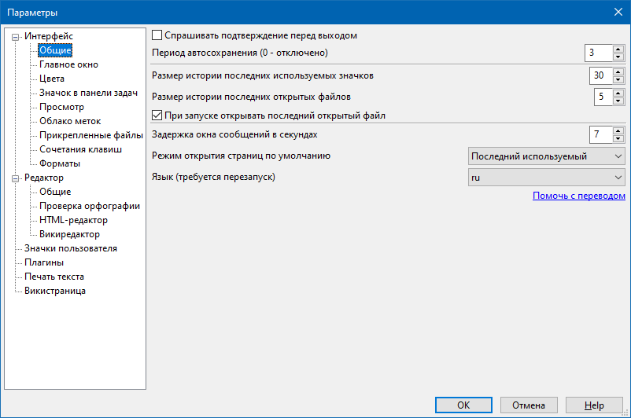

Интерфейс - Общие
Интерфейс - Главное окно
Интерфейс - Цвета
Интерфейс - Значок в панели задач
Интерфейс - Просмотр
Интерфейс - Облако меток
Интерфейс - Прикрепленные файлы
Интерфейс - Сочетания клавиш
Редактор - Общие
Редактор - Проверка орфографии
Редактор - HTML-редактор
Редактор - Викиредактор
Значки пользователя
Плагины
Печать текста
Викистраница
Расположение файла настроек
OutWiker хранит все настройки в файле outwiker.ini, расположение которого зависит от операционной системы и от режима работы программы (портабельный режим или обычный).
Портабельный режим включается в том случае, если существует файл outwiker.ini около запускаемого файла outwiker.exe. В этом случае программа все настройки, плагины и стили страниц ищет исключительно в пределах папки с программой, и в этом случае программу можно безопасно запускать с флешки на чужом компьютере, не боясь, что какие-то файлы настроек останутся на этом компьютере после вас.
Если вы не используете программу в портабельном режиме, то под Windows 7/10 файл outwiker.ini будет располагаться в папке C:\Users\USERNAME\AppData\Roaming\outwiker или аналогичной папке в профиле пользователя. Там же будут располагаться папки для хранения плагинов, пользовательских стилей и значков.
Под Linux расположение файла настроек может зависеть от переменной окружения XDG_CONFIG_HOME или, если она не задана, то путь до файла outwiker.ini будет выглядеть как ~/.config/outwiker/outwiker.ini.
Большинство настроек программы доступно через диалог, который отображается, если выбрать пункт меню Правка - Параметры...
